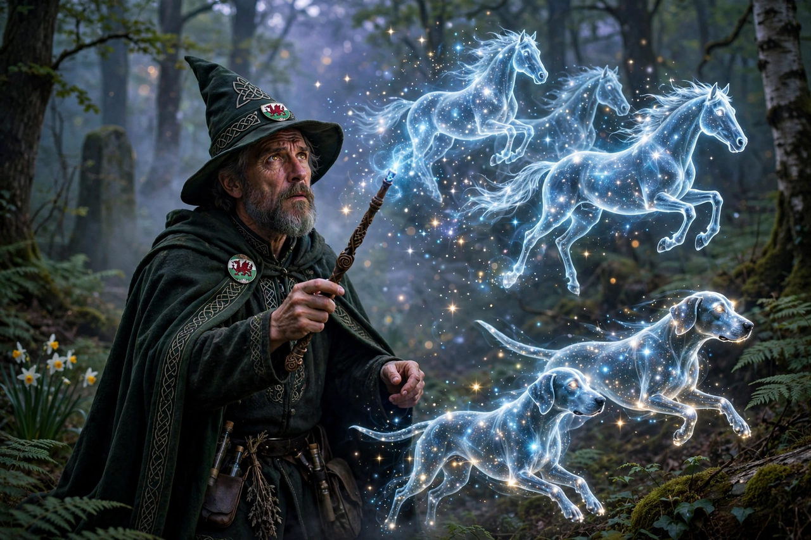

Gwydion
Gwydion fab Dôn is a magician, hero, and trickster in Welsh mythology, appearing chiefly in the Fourth Branch of the Mabinogi. A nephew of Math fab Mathonwy, king of Gwynedd, he is a master of illusion and poetry — in the Cad Goddeu tradition he conjures armies from trees — and acts as foster-father and champion of his nephew Lleu Llaw Gyffes. He is a son of the goddess-figure Dôn, and brother of Arianrhod, Gilfaethwy, and others of the Plant Dôn ("Children of Dôn").

| Mother | Dôn |
|---|---|
| Siblings | Arianrhod, Gilfaethwy, Gofannon, Amaethon |
| Uncle | Math fab Mathonwy |
| Foster-son | Lleu Llaw Gyffes |
| Appears in | Fourth Branch of the Mabinogi; Cad Goddeu |
The theft of Pryderi's pigs
To help his brother Gilfaethwy gain access to Goewin, the footholder of Math, Gwydion travels to Dyfed disguised as a bard and entertains Pryderi with his storytelling — he is called the best storyteller in the world. In exchange for the marvellous swine sent to Pryderi from Annwn by Arawn, he offers horses and hounds conjured from toadstools, gilded by illusion. The glamour fades the next day, and war follows between Gwynedd and Dyfed, ending when Pryderi falls to Gwydion in single combat — by strength and magic combined, the tale admits.
Punishment and restoration
For their crime against Goewin, Math transforms Gwydion and Gilfaethwy into a hind and stag, then boars, then wolves, for three years, during which they produce offspring. Restored to human form and forgiven, Gwydion recommends his sister Arianrhod as the new footholder — with fateful consequences.
Champion of Lleu
Gwydion raises the child Lleu, tricks Arianrhod into naming and arming him, and with Math creates his bride Blodeuwedd from flowers. When Lleu is struck down and flees in the shape of a wounded eagle, Gwydion follows him by song through three cantrefs, finds him roosting in an oak above a sow, and sings him down with three englynion, healing him and leading the vengeance on Gronw and Blodeuwedd.
In other texts
In the poem Cad Goddeu ("The Battle of the Trees") in the Book of Taliesin, Gwydion animates the trees of the forest to fight Arawn. Welsh tradition also associates him with the Milky Way, called Caer Wydion ("Gwydion's Fortress").
See also
References
- Davies, Sioned (trans.), The Mabinogion, Oxford World's Classics, 2007.
- Haycock, Marged (trans.), Legendary Poems from the Book of Taliesin, 2007.